Рассказ-показ
Часть первая · Стили · Прошлое открывает будущее
СТИЛИ
И ТРЕНДЫ
Зачем понимать стили,
если современность
не требует канонов?
- Время — около часа на чтение и полчаса на практику.
- После — читаете незнакомый интерьер по семи осям и называете его философию одной фразой: с нее начинается бриф.
Платная лекция · 2 500 ₽
| Что внутри | открыто | полностью |
|---|---|---|
| главы | 3 | 9 |
| понятия | 6 | 19 |
| стили по осям | 1 | 7 |
| шаги упражнения | 1 | 4 |
| проверки | 2 | 13 |
| минуты записи | 5 | 81 |
«АТМОСФЕРА = ИДЕОЛОГИЯ/ФИЛОСОФИЯ/ЦЕННОСТИ ЖИЗНИ»
- 7 стилей
- 7 осей анализа
- 19 понятий
- упражнение
- 13 проверок
Запись — 1:21:23

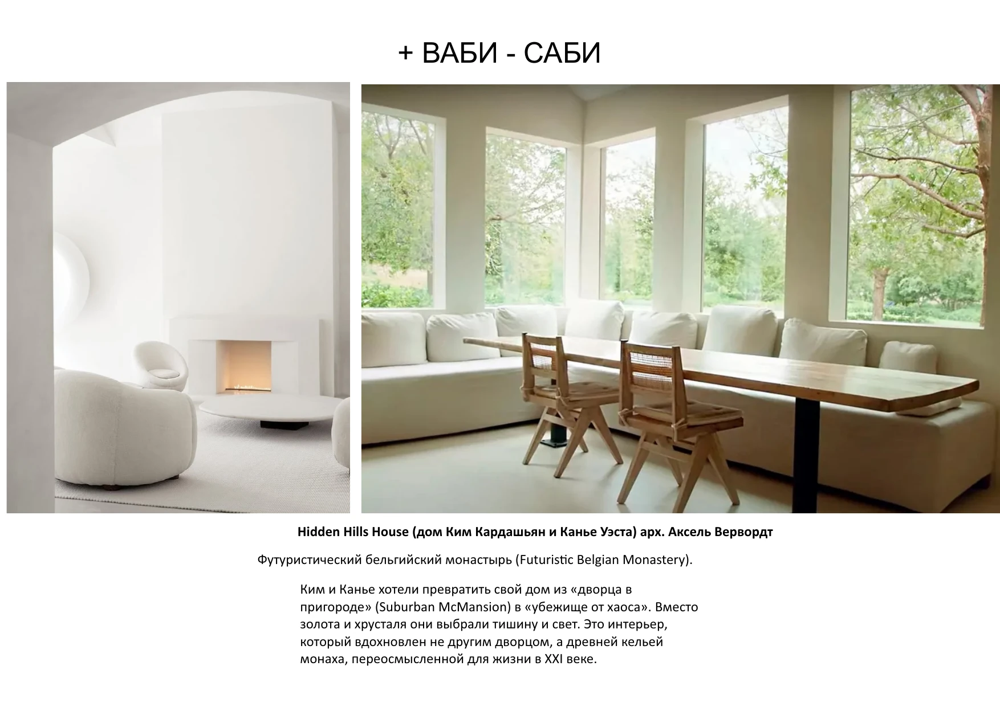
Текст отрывка
Но если вы подумали о том, что Axel Vervoordt только собирает вот эти живущие давно текстуры и фактуры, то здесь я вам показываю очень острый и такой в свое время прогремевший интерьер — это Kim Kardashian и Kanye West. Когда они решили создать свой дом, и посмотрите, пожалуйста, здесь я прямо привожу, если не прямые цитаты, то это из интервью следует, в убежище от хаоса, это просто тот самый девиз, который мы испытывали в романском стиле. Вместо золота и хрусталя, который определенным образом ассоциируется с хорошим достатком, здесь мы видим тишину и свет. Вот она опять, вот этот вот оммаж, источник вдохновения из романского стиля. Этот интерьер, который вдохновлен не другим дворцом, как демонстрация статуса, а древней кельей монаха, переосмысленной для жизни в XXI веке.

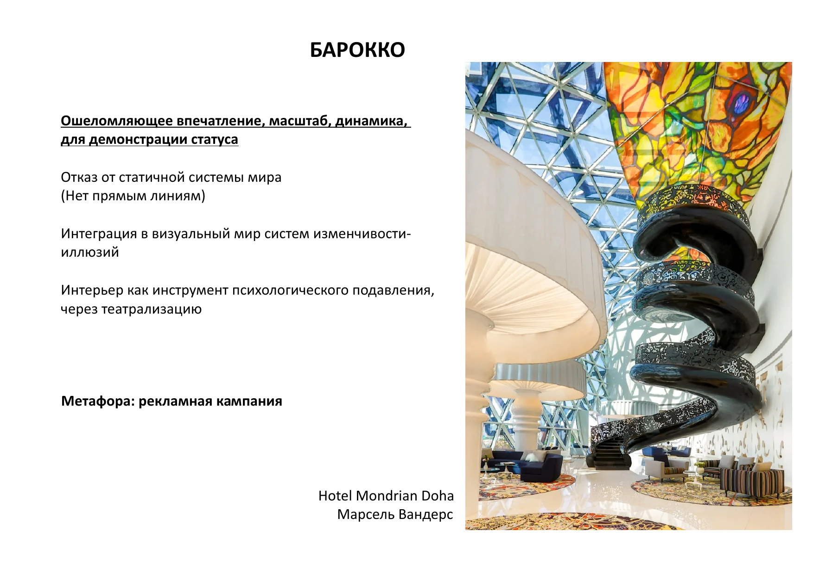
Текст отрывка
А вообще, если говорить еще проще, может быть, на современном языке я бы предложила вот такую метафору. Интерьер как рекламная кампания. И посмотрите, пожалуйста, на работу также знаменитого, как и предыдущие мастера Marcel Wanders. Я сегодня специально взяла очень знаменитых мастеров и предлагаю вам посмотреть именно вот с этой точки зрения. Посмотрите, как он работает с этой квинтэссенцией барокко, как здесь всё бурлит, завивающаяся лестница, крупномасштабные неожиданные элементы, много цвета, сталкивающиеся паттерны. То есть мы чувствуем себя, в общем-то, как в каком-то другом мире. Здесь интерьер как нечто совершенно непохожее на то, что нас окружает. Мы находимся в иллюзиях, которые создает и масштаб, и цвет, и ритм. И вот такие игры, опять же повторюсь, масштабом, что-то большое, что-то маленькое, где-то какие-то вещи, которые нам кажутся, мы будем разговаривать про визуальную тему, про орнамент с растительной средой. Нет, тут же будет определенная геометрия, может быть, нам вспомнится даже ренессансная культура, и в частности во Флоренции определенная отделка некоторых храмов. Здесь это очень артистично сделано, просто взято без идеологии, а с точки зрения только формообразования. Вот мы с вами находимся всего-навсего в холле этого отеля Mondrian, и уже чувствуем себя в театре, вот эта театрализованность и будет взята в теме, которая связана с переосмыслением барокко, это сегодня один из самых актуальных трендов.

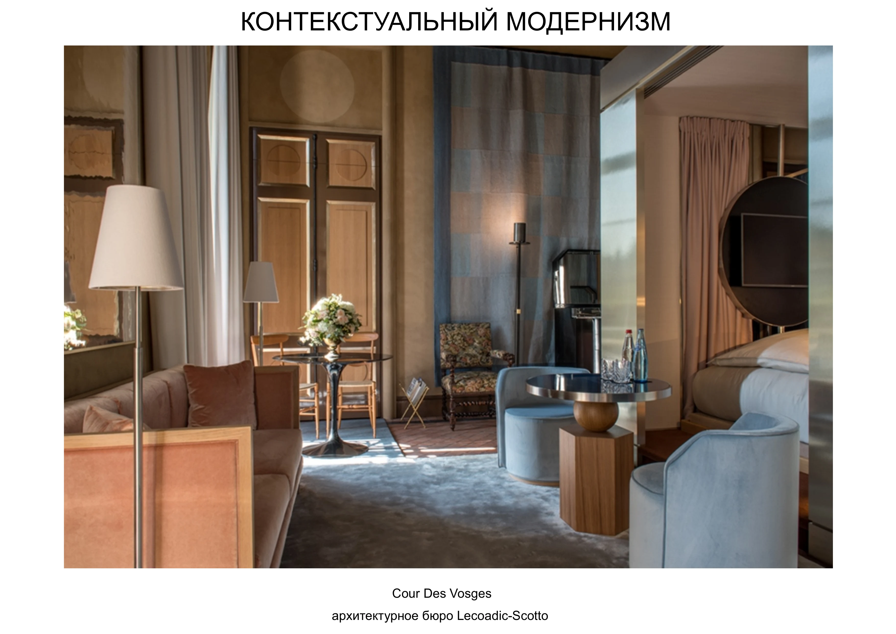
Текст отрывка
Я предлагаю всем своим студентам, и согласитесь вы со мной или нет, вообще начинать бриф с чего-то очень самого важного. Не какую вы хотите квартиру, глядя на референсы, ну как на уже состоявшийся и кем-то сделанный интерьер, а поговорить о философии. Что в этом интерьере важнее? Демонстрация статуса, защита, предметы, которые больше дороги для вас, или, может быть, предметы, которые связаны с коллекциями, опять же, это будет определенная демонстрация интеллектуальной среды. Вот сделать какой-то девиз всему брифу, и тогда кажется, что дальше, когда мы можем эмоционально уйти уже в интерьерную среду, в создание интерьерной среды, у нас будут дискуссии с заказчиками, может, они будут. Мы будем обращаться к вот этому мотто, к девизу, к основным ценностям жизни и смотреть, перебирать опять, да, сложили, сделали какой-то коллаж, сделали какую-то визуализацию, что-то еще, и посмотреть, насколько та или иная предметная среда соответствует вот этим корневым пожеланиям этой философии и этой территории ценности заказчика.
Глава 1 · 0:11–8:30 Камертон
«Речь пойдет не об этом. Речь пойдет о, наверное, самом важном, о философии, через которую можно сегодня создавать нечто оригинальное.»
Два интерьера, с которых лекция начинается без объяснений: квартира Laura Gonzalez и выставочная композиция Humbert & Poyet. Вернемся к ним в самопроверке — прочитать по осям, когда оптика уже в руках.1
0:11–8:30

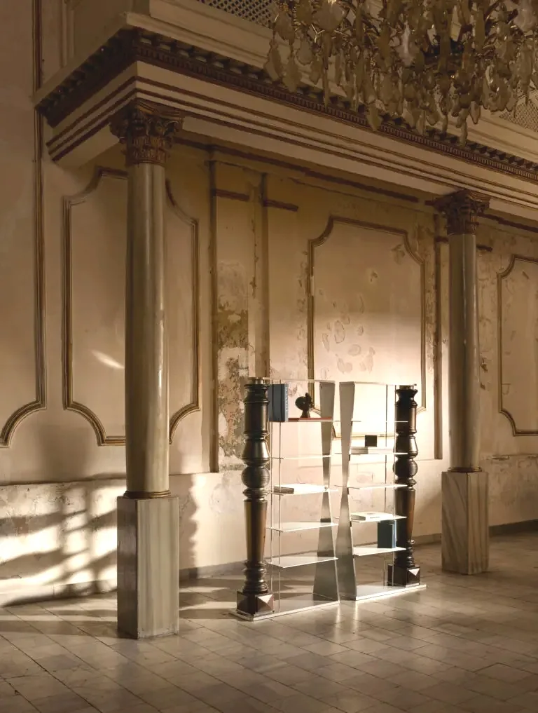
СТИЛИ & ТРЕНДЫ
Открытие
Прошлое открывает будущееКолонный зал с современным стеллажом
«мы сегодня можем обратиться к стилям, возможно, не всегда останавливаясь на визуальных паттернах.»
0:11–2:11

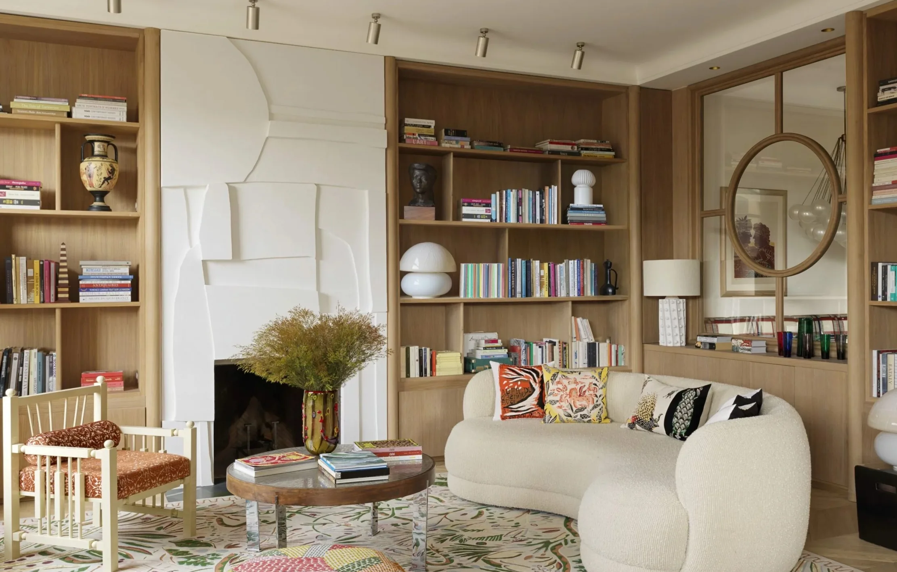

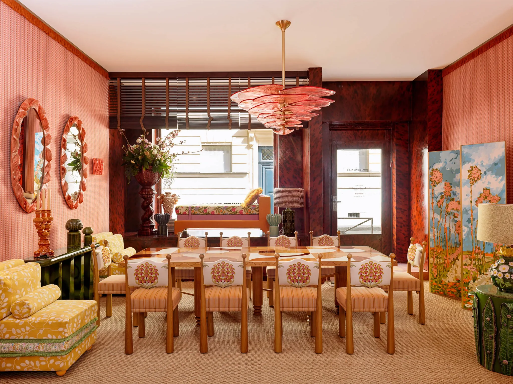
Камертон · квартира
Laura GonzalezКвартира: белый скульптурный камин и округлый белый диван
«Чем больше мы проваливаемся в это чтение, погружаемся в эти элементы, тем интереснее нам находиться в этом интерьере.»2
2:11–5:36

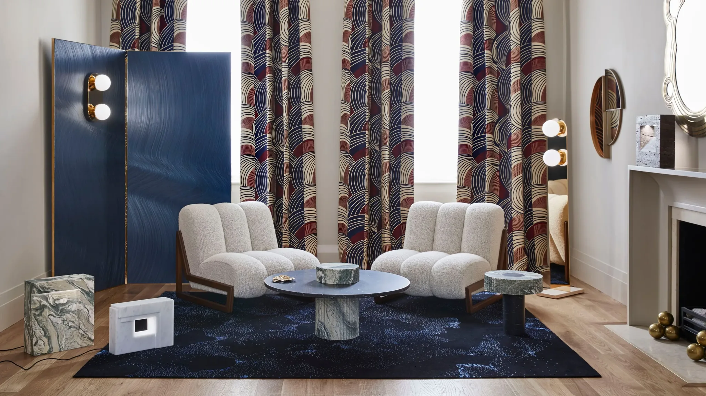

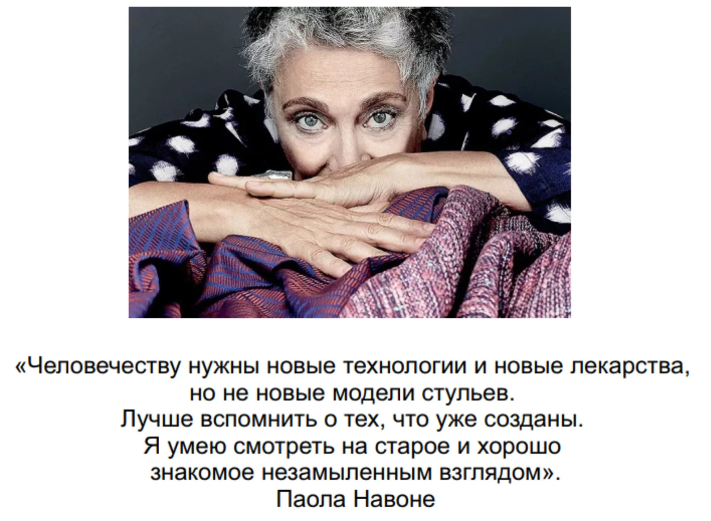
Камертон · выставочная композиция
Humbert & PoyetВыставочная композиция Humbert & Poyet и цитата Paola Navone: синяя ширма, шторы с орнаментом, белые кресла, мрамор
«Мы видим вроде бы классический элемент ширмы, но уже очищенный от излишеств, и более того, здесь ширма многофункциональна.»
5:36–8:30
Упражнение автора
Портрет заказчика
- «Как это всё сочетается? И самое главное, какой за этим стоит посыл? Что это за история? Что это за рассказ, который посвящен определенным заказчикам?»
- «Конечно, было бы очень интересно узнать ваше мнение, кого вы здесь считываете, может быть, даже можно создать, знаете, такой портрет, предполагаемый портрет заказчика»
Глава 2 · 8:30–23:27 Понятия
«Мы создаем атмосферу.»
Зачем понимать элементы стилей, если современность не требует канонов?3
Главный ответ — атмосфера. Стиль здесь не набор визуальных признаков, которым учат на курсах истории дизайна, а идеология, философия и ценности жизни, воплощенные в пространстве. Дальше каждая глава берёт одну эпоху и спрашивает, во что она верила и как это видно в интерьере сегодня.4
8:30–23:27

АРХИТЕКТУРНЫЙ СТИЛЬ (ПО ОКСФОРДСКОМУ СЛОВАРЮ)
Определение: тип здания с фиксированными признаками конструкций и визуальных элементов
Составные компоненты (или как опознать стиль):
- Форма и геометрия здания
- Строительные материалы
- Тип декора (узоры, форма окон, наличие или отсутствие колонн)
Параметры классификации: Время: Привязка к исторической эпохе Место: Привязка к географической территории.
В академической традиции (Вёльфлин, Панофский, Грабар) статус «Большого стиля» присваивается художественным системам, обладающим тотальным охватом всех видов пространственных искусств, единой идеологической программой и, что критически важно, собственной конструктивной (тектонической) логикой.
Понятия · определение
Что такое стиль«Стиль — это тогда, когда выстраиваются паттерны формообразования, морфология в течение довольно большого времени, иногда в течение даже столетий.»
8:30–13:49

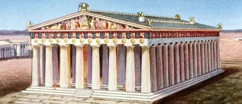

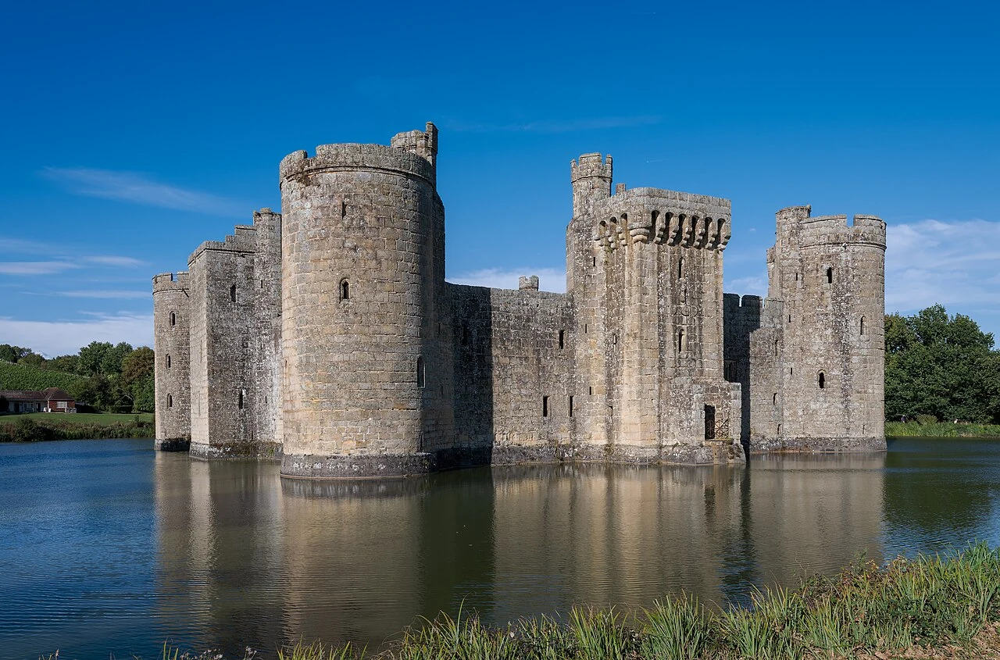

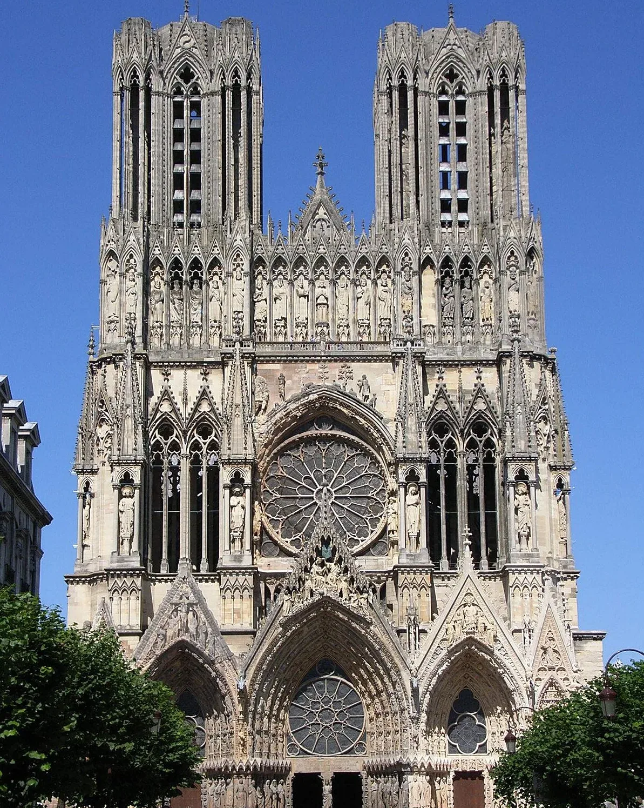

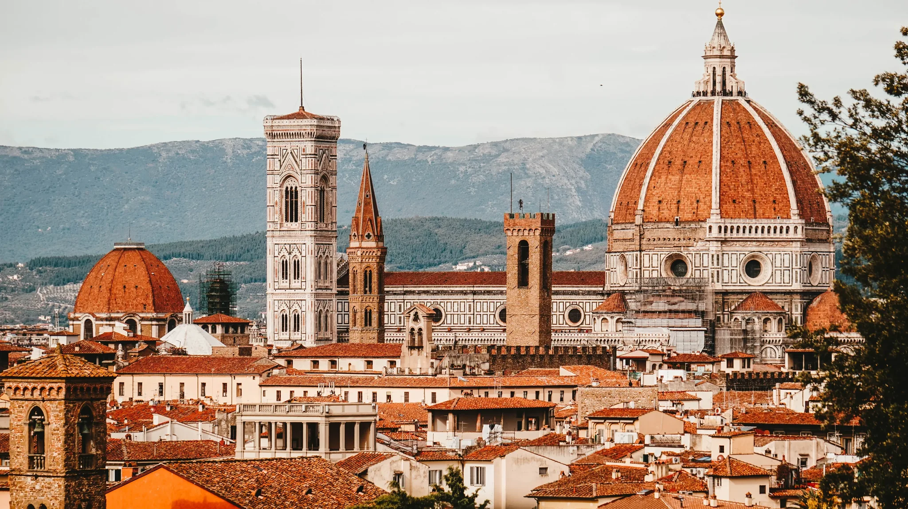

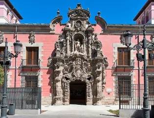

- Античная ордерная система (Древняя Греция и Древний Рим)Хронологический интервал: VIII в. до н.э. — V в. н.э.
- Романский стильХронологический интервал: X — XII вв.
- ГотикаХронологический интервал: Середина XII — XV/XVI вв.
- Ренессанс (Возрождение)Хронологический интервал: XV — начало XVII вв.
- Барокко (включая противоречивую фазу рококо)
- Классицизм (включая позднюю фазу — Ампир)Хронологический интервал: XVII — начало XIX вв.
Понятия · шесть систем
Большие стили«Но есть и такое мнение у историков о стиле, что рококо — это такая противоречивая фаза барокко»5
13:49–17:09

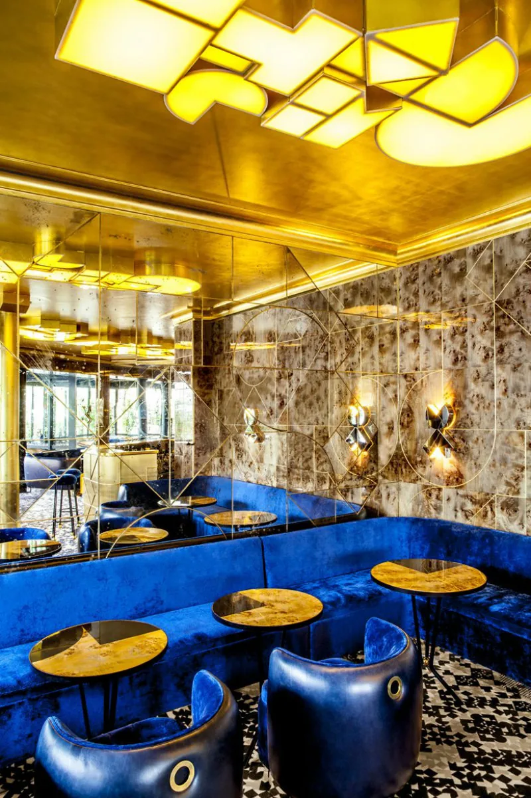

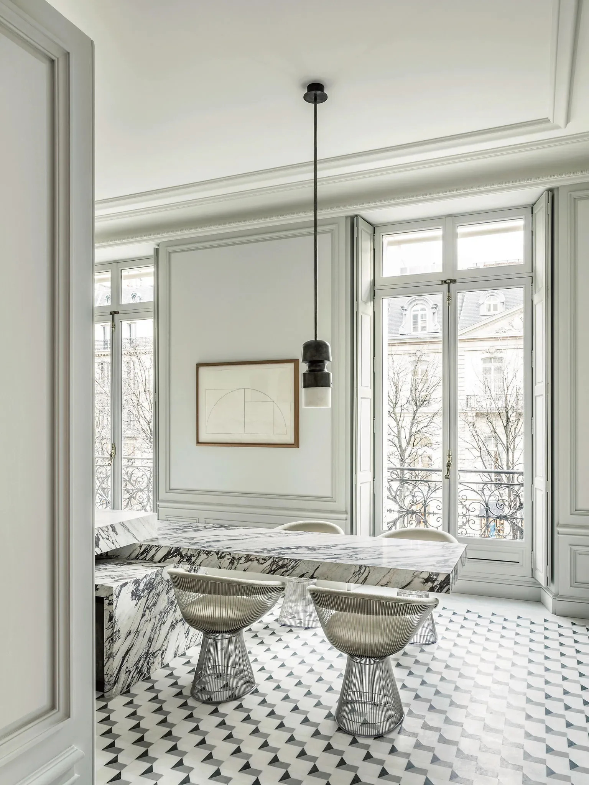
Интерьерный стиль Определение:
- Устойчивая система визуальных, конструктивных и планировочных признаков внутри замкнутого архитектурного объема.
- Составные компоненты (идентификационные маркеры):
- Колористическая схема (количественное соотношение площадей цвета).
- Спецификация отделочных материалов поверхностей.
- Морфология мебельных изделий (геометрия, пропорции, текстура).
- Схема распределения источников освещения.
- Параметры формирования:
- Утилитарность: Первичная зависимость визуальных характеристик от параметров эргономики и физиологических потребностей пользователя.
- Масштабирование: Компрессия элементов макро-стилей (архитектурных или исторических) до габаритов изолированного помещения.
Joseph Dirand
India Mahdavi
- Специфические характеристики (в сравнении с архитектурой):
- Жизненный цикл физического воплощения интерьерного стиля статистически короче жизненного цикла здания.
Понятия · маркеры
Интерьерные стили«Это то, что отделяет интерьерный стиль от стиля художественного, стиля изящных искусств, — утилитарная позиция.»
17:09–22:40
ЗАЧЕМ НАМ ПОНИМАТЬ ЭЛЕМЕНТЫ СТИЛЕЙ,
ЕСЛИ СОВРЕМЕННОСТЬ НЕ ТРЕБУЕТ КАНОНОВ?
Понятия · ключ лекции
Атмосфера«АТМОСФЕРА = ИДЕОЛОГИЯ/ФИЛОСОФИЯ/ЦЕННОСТИ ЖИЗНИ»
22:40–23:27
Глава 3 · 23:27–35:41 Античность
«Главное в античности — человек.»6
Во что верила античность: мир как идеальный порядок, где всё на своем месте, а мера всему — человек.
Космос против хаоса; у Рима к порядку добавляется польза. В XX–XXI веках этот порядок читается у Emmanuel Pontremoli на Villa Kérylos и в мебельной серии Karl Lagerfeld.
23:27–35:41

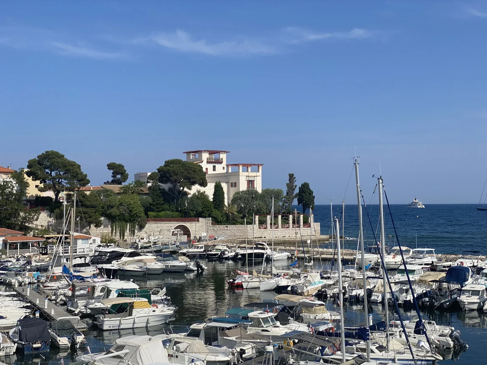

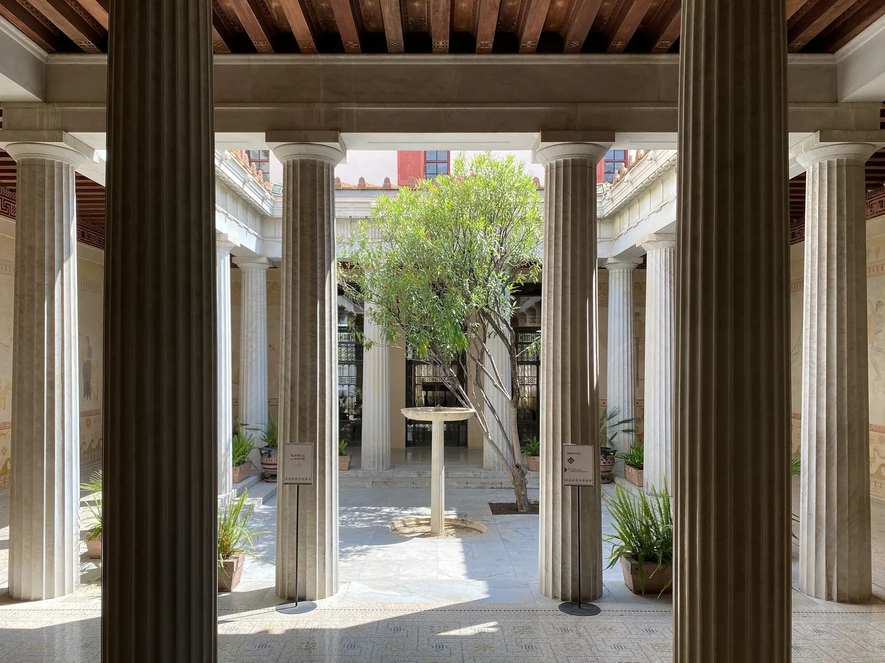
АНТИЧНОСТЬ
Главное — человек. Человек как модуль
Антихаос — порядок как признак гармонии
В Древнем Риме акцент на утилитаризм (польза)
Villa Kérylos (вилла Рейнаха) 1902-1908 арх. Emmanuel Pontremoli
Античность · философия
Мир как порядок«Каждая деталь находится на своем месте.»
23:27–27:49

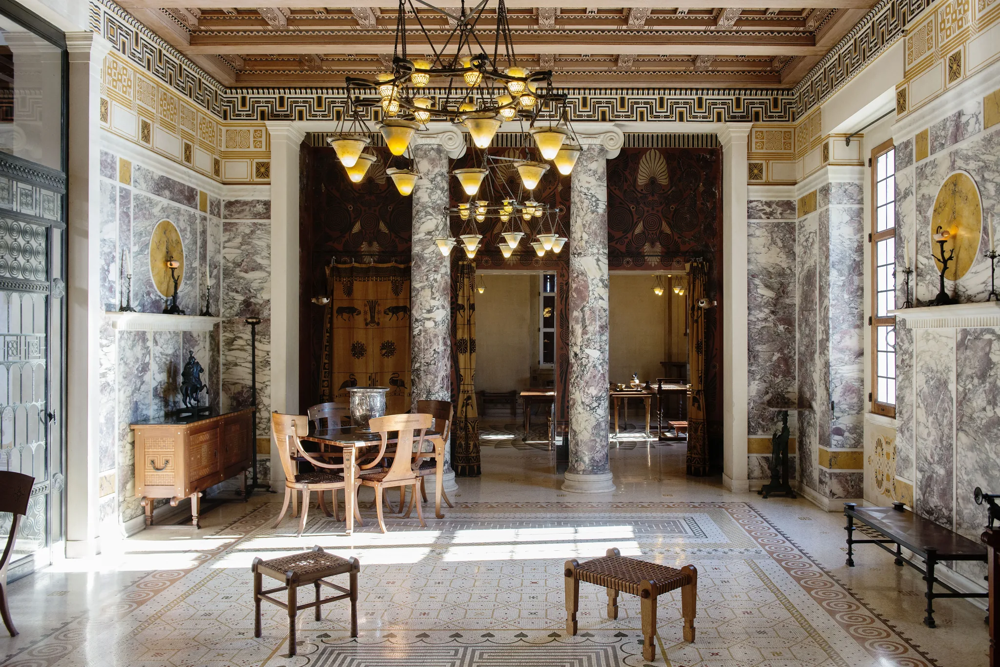

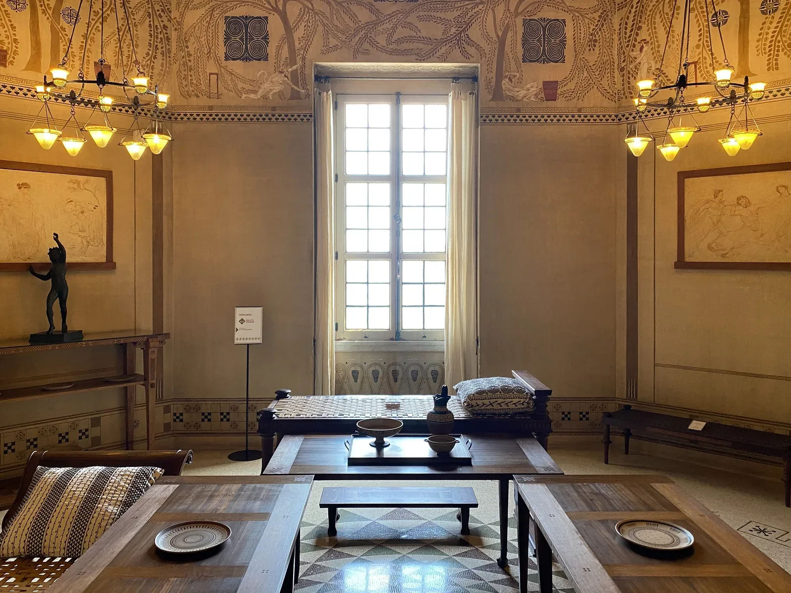
Античность · Emmanuel Pontremoli, 1902–1908
Villa KérylosКолонный зал с мозаикой и меандром; античный зал с фресками, меандром и бронзовыми светильниками
«Правда, просто напомню, что греческие храмы были невероятно цветными, со своей иерархией цветов, со своими орнаментами.»7
27:49–33:51

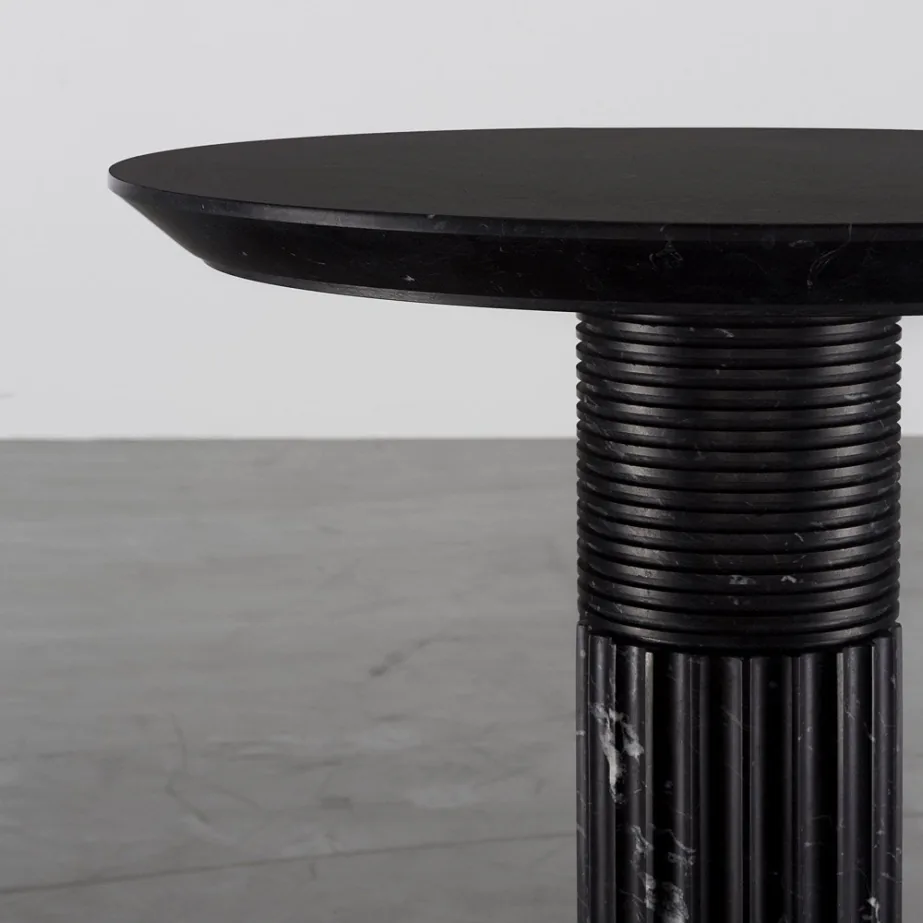

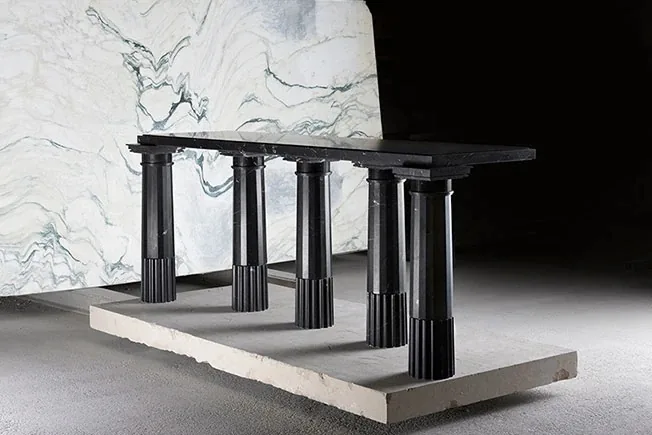

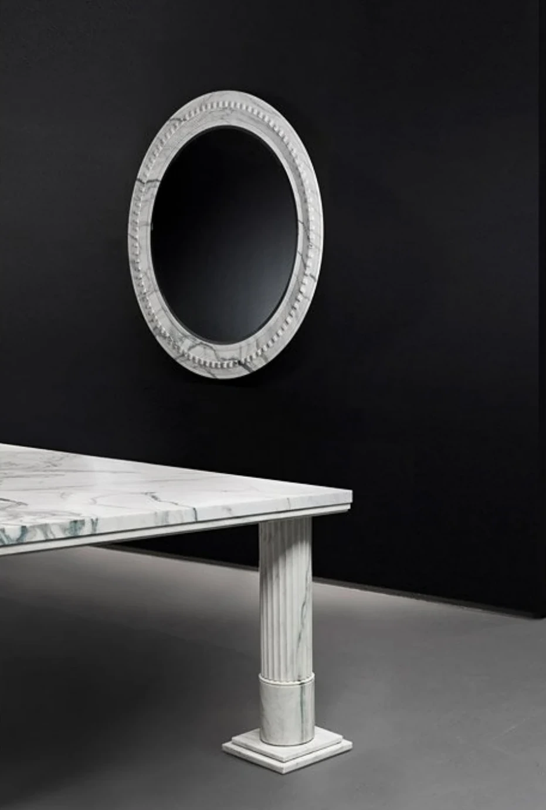

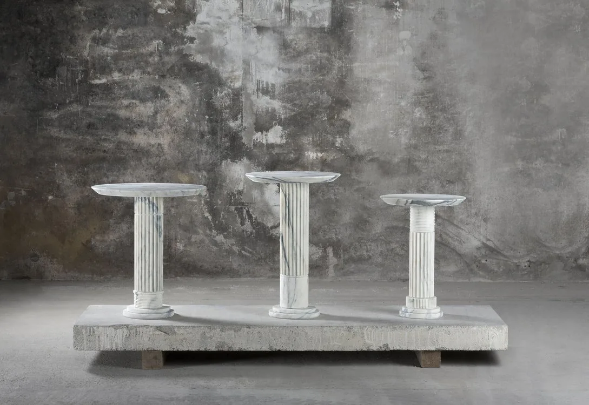
Античность · пример в интерьере
Колонны Karl LagerfeldМебель-колонны: черные столы-ордеры, белые мраморные табуреты, зеркало, консоль
«Вот такая тема очень важна для тех людей или для тех заказчиков, которые хотят определенной стабильности и, может быть, в какой-то степени неразрушимости объекта вечных ценностей.»
33:51–35:41
Шпаргалка стиля
Античность
- «Каждая деталь находится на своем месте.»
- «Правда, просто напомню, что греческие храмы были невероятно цветными, со своей иерархией цветов, со своими орнаментами.»7
- «Здесь в данном случае материал как статусный элемент.»
Редакторское дополнение к лекции Ольги Розет
Вопрос для паузы
Остановитесь на минуту
Какой признак в интерьере назовете первым, чтобы показать порядок, где у каждой детали свое место?
Показать ответ
«И здесь мы опять же видим упорядоченность, симметрию.»
Словарь
Термины лекции в порядке появления. Каждое понятие ведет к примерам, где оно работает.
Редакция
еще 5 разворотов — в закрытой части
- Стиль
Тип здания или интерьера с устойчивыми признаками конструкции и облика. Опознается по форме и геометрии, материалам и типу декора; классифицируется по времени и месту.8
- Большой стиль
Художественная система, охватившая все пространственные искусства, с единой идеологией и собственной тектонической логикой. Их шесть: античный ордер, романский, готика, ренессанс, барокко, классицизм с ампиром.9
- Интерьерный стиль
Устойчивая система признаков внутри замкнутого объема: колористическая схема, материалы поверхностей, морфология мебели, схема света. Рождается утилитарностью и сжатием большого стиля до комнаты; живет короче здания.10
- Атмосфера
То, ради чего нужны стили без канонов: идеология, философия и ценности жизни, воплощенные в пространстве. Ключ всей лекции.11
- Космоцентризм
Античная картина мира: мир как идеальный порядок, где каждая деталь на своем месте. Порядок — признак гармонии, его противник — хаос.12
- Человек как модуль
Мера античного порядка — человек: из его пропорций выводится ордер, а у Рима к порядку добавляется польза.13
Инструмент
Оси анализа
Те же семь осей, которыми разбираются тренды, — здесь применены к стилям. Прошлое читается той же оптикой, что настоящее: пройдите по семи осям на любом интерьере и соберите итог в одну фразу — девиз пространства, с которого начинается бриф.
Редакция
- Формообразование
Морфология
Чем держится форма: какой модуль, какая геометрия, где ось.14
- Античность — ордер и симметрия; колонна как модуль, мера всему — человек.15
- Цвета
Интенсивность, температура, характер
Чем эпоха красит и что цвет обещает.16
- Античность — охра и золото по камню; храмы были цветными, белыми их сделало время.17
- Орнаменты
Узор как осмысленный выбор
Что узор говорит, когда его читают, а не разглядывают.18
- Античность — меандр и мозаика: орнамент читается как текст.19
- Текстуры
Тактильность и столкновение фактур
Что чувствует рука и что фактура рассказывает о времени.20
- Античность — полированный мрамор против росписи; объём рядом с плоскостью.21
- Материалы
Честность сырья без имитаций
Из чего сделано — и что материал обещает заказчику.22
- Античность — мрамор: достоинство, статус, долговечность.23
- Технологии
Чем построено и что умеет эпоха
Что появилось в доме, чего раньше не было, — и что это переменило в самом интерьере.24
- Античность — ордерная система и римская инженерия; польза предмета как требование.
- Философия времени
Идеология и философия времени и места
С чего начинается каждая глава: во что эпоха верила.25
- Античность — мир как идеальный порядок; антихаос, человек как мера.
Закрытая часть
Доступ добавляет еще 6 глав и 76 минут записи
| Глава 4 · 35:41–46:45 | Романский стиль — Открывается с доступом | 11 минут записи |
|---|---|---|
| Глава 5 · 46:45–53:44 | Готика — Открывается с доступом | 7 минут записи |
| Глава 6 · 53:44–1:04:32 | Ренессанс — Открывается с доступом | 11 минут записи |
| Глава 7 · 1:04:32–1:10:50 | Барокко — Открывается с доступом | 6 минут записи |
| Глава 8 · 1:10:50–1:17:44 | Классицизм и Ампир — Открывается с доступом | 7 минут записи |
| Глава 9 · 1:17:44–1:21:02 | Контекстуальный модернизм — Открывается с доступом | 3 минуты записи |
| Упражнение — Открывается с доступом | 3 разворота | |
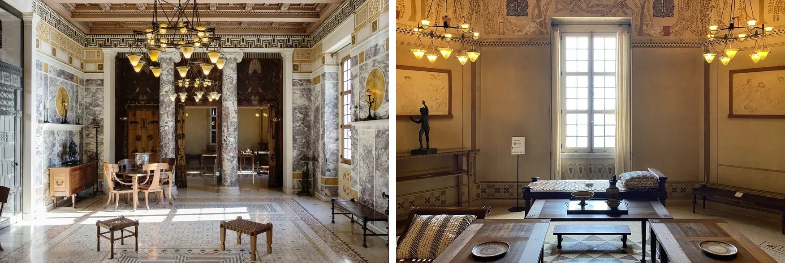 Упражнение · образец Разбор Villa KérylosТак лекция читает Villa Kérylos по семи осям. Это образец, с которым можно сверять свой разбор.
| ||
| Самопроверка — Открывается с доступом | 12 разворотов | |
Самопроверка Проверка 2Что здесь главнее хозяина? Прежде чем выбирать вариант: по какой оси вы различаете?
Показать ответАнтичность. Порядок как антихаос: меандр, симметрия, ордер, мрамор ради достоинства. Как отличить: та же симметрия у классицизма означала бы закон общества и знак старых денег. Здесь она означает космос, в котором человек — мера и модуль. 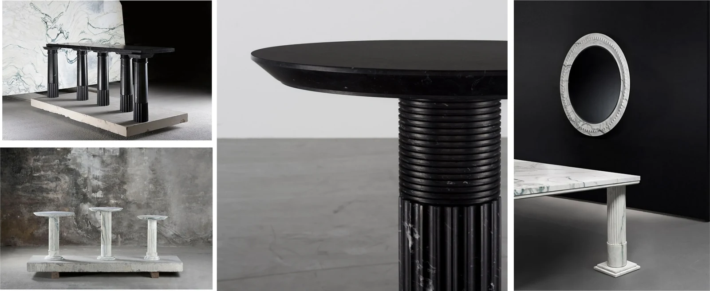 Самопроверка Проверка 13Черные и белые мраморные столы с каннелюрами на гладком современном фоне: что делает их античными? Прежде чем выбирать вариант: по какой оси вы различаете?
Показать ответАнтичность здесь держат две вещи — форма колонны с каннелюрами как модуль и цельный мрамор как знак достоинства и вечности. Как отличить прием: уберите мысленно каннелюры и камень — останется обычная современная консоль. Значит, именно эти оси несут стиль, а фон можно оставлять чистым. | ||


Заметили неточность, хотите поспорить с разбором или задать вопрос по материалу — напишите автору, контакты внизу страницы.
Квалификация утверждений
- Два интерьера, с которых лекция начинается без объяснений: квартира Laura Gonzalez и выставочная композиция Humbert & Poyet. Вернемся к ним в самопроверке — прочитать по осям, когда оптика уже в руках. — авторская интерпретация. источник: не сверено вернуться к утверждению
- Чем больше мы проваливаемся в это чтение, погружаемся в эти элементы, тем интереснее нам находиться в этом интерьере. — не сверено. источник: не сверено вернуться к утверждению
- Зачем понимать элементы стилей, если современность не требует канонов? — не сверено. источник: не сверено вернуться к утверждению
- Главный ответ — атмосфера. Стиль здесь не набор визуальных признаков, которым учат на курсах истории дизайна, а идеология, философия и ценности жизни, воплощенные в пространстве. Дальше каждая глава берёт одну эпоху и спрашивает, во что она верила и как это видно в интерьере сегодня. — не сверено. источник: не сверено вернуться к утверждению
- Но есть и такое мнение у историков о стиле, что рококо — это такая противоречивая фаза барокко — не сверено. источник: не сверено вернуться к утверждению
- Главное в античности — человек. — не сверено. источник: не сверено вернуться к утверждению
- Правда, просто напомню, что греческие храмы были невероятно цветными, со своей иерархией цветов, со своими орнаментами. — не сверено. источник: не сверено вернуться к утверждению (2)
- Тип здания или интерьера с устойчивыми признаками конструкции и облика. Опознается по форме и геометрии, материалам и типу декора; классифицируется по времени и месту. — не сверено. источник: не сверено вернуться к утверждению
- Художественная система, охватившая все пространственные искусства, с единой идеологией и собственной тектонической логикой. Их шесть: античный ордер, романский, готика, ренессанс, барокко, классицизм с ампиром. — не сверено. источник: не сверено вернуться к утверждению
- Устойчивая система признаков внутри замкнутого объема: колористическая схема, материалы поверхностей, морфология мебели, схема света. Рождается утилитарностью и сжатием большого стиля до комнаты; живет короче здания. — не сверено. источник: не сверено вернуться к утверждению
- То, ради чего нужны стили без канонов: идеология, философия и ценности жизни, воплощенные в пространстве. Ключ всей лекции. — не сверено. источник: не сверено вернуться к утверждению
- Античная картина мира: мир как идеальный порядок, где каждая деталь на своем месте. Порядок — признак гармонии, его противник — хаос. — не сверено. источник: не сверено вернуться к утверждению
- Мера античного порядка — человек: из его пропорций выводится ордер, а у Рима к порядку добавляется польза. — не сверено. источник: не сверено вернуться к утверждению
- Чем держится форма: какой модуль, какая геометрия, где ось. — не сверено. источник: не сверено вернуться к утверждению
- Античность — ордер и симметрия; колонна как модуль, мера всему — человек. — не сверено. источник: не сверено вернуться к утверждению
- Чем эпоха красит и что цвет обещает. — не сверено. источник: не сверено вернуться к утверждению
- Античность — охра и золото по камню; храмы были цветными, белыми их сделало время. — не сверено. источник: не сверено вернуться к утверждению
- Что узор говорит, когда его читают, а не разглядывают. — не сверено. источник: не сверено вернуться к утверждению
- Античность — меандр и мозаика: орнамент читается как текст. — не сверено. источник: не сверено вернуться к утверждению
- Что чувствует рука и что фактура рассказывает о времени. — не сверено. источник: не сверено вернуться к утверждению
- Античность — полированный мрамор против росписи; объём рядом с плоскостью. — не сверено. источник: не сверено вернуться к утверждению
- Из чего сделано — и что материал обещает заказчику. — не сверено. источник: не сверено вернуться к утверждению
- Античность — мрамор: достоинство, статус, долговечность. — не сверено. источник: не сверено вернуться к утверждению
- Что появилось в доме, чего раньше не было, — и что это переменило в самом интерьере. — не сверено. источник: не сверено вернуться к утверждению
- С чего начинается каждая глава: во что эпоха верила. — не сверено. источник: не сверено вернуться к утверждению
Источники изображений
Иллюстрации из авторской подборки Ольги Розет и открытых публикаций; ниже указаны источники опубликованных кадров.
- Исторический зал с высокими коринфскими колоннами, патинированными стенами, хрустальной люстрой и современным металлическим стеллажом с точеными темными опорами в центре — слайд 1 лекции
- Гостиная-библиотека работы Laura Gonzalez: дубовые стеллажи с книгами и античной амфорой, белый скульптурный гипсовый камин, изогнутый белый диван букле с яркими подушками и круглый стол — lauragonzalez.fr
- Шоурум Laura Gonzalez в Париже (3 rue de Lille): эклектичная столовая с длинным столом маркетри, вышитыми стульями, розовыми фактурными обоями, розовой стеклянной люстрой, желтым креслом и расписной ширмой — lauragonzalez.fr
- Выставочная композиция Humbert & Poyet: два кремовых ребристых кресла букле, синяя лаковая ширма с двойным шаровым бра, шторы с геометрическим веерным орнаментом, зеленые мраморные столики и темный ковер — theinvisiblecollection.com
- Портрет Paola Navone в черно-белом рукаве в горох, опирающейся подбородком на сложенные руки поверх сиренево-синей ткани; ниже цитата: «Человечеству нужны новые технологии и новые лекарства, но не новые модели стульев. Лучше вспомнить о тех, что уже созданы. Я умею смотреть на старое и хорошо знакомое незамыленным взглядом». Paola Navone — слайд 3 лекции
- Собор Святого Петра в Риме (Ватикан): ренессансно-барочный фасад Carlo Maderno, купол Микеланджело, колоннада и статуи на аттике над черепичными кровлями — basilicasanpietro.va
- Историческая полихромная реконструкция древнегреческого дорического храма (Парфенона): восемь каннелированных колонн фасада, скульптурный фронтон, раскрашенные красным и синим триглифы и метопы — commons.wikimedia.org
- Замок Бодиам (Bodiam Castle, Восточный Сассекс, 1385): средневековый каменный замок с круглыми зубчатыми башнями, узкими бойницами и рвом с водой, отражающим стены — commons.wikimedia.org
- Западный фасад Реймсского собора (готика): две симметричные башни, галерея королей, три стрельчатых портала с каменной резьбой и окно-роза — commons.wikimedia.org
- Панорама Флоренции: терракотовый купол собора Санта-Мария-дель-Фьоре, колокольня Джотто, шпиль Бадиа-Фьорентина, башня Барджелло и купол капеллы Медичи на фоне гор — imagetours.co.il
- Барочный фасад Музея истории Мадрида (бывший приют Сан-Фернандо, Pedro de Ribera): розовые стены и богато украшенный резной каменный портал в стиле чурригереско — novikov‑architect.ru
- Таврический дворец в Санкт-Петербурге (Иван Старов, 1783–1789, классицизм): желтый фасад с белым шестиколонным дорическим портиком, фронтоном, зеленым куполом над ротондой и кованой оградой — commons.wikimedia.org
- Интерьер ресторана работы India Mahdavi: глубокие синие бархатные диваны и кресла, золоченый потолок с геометрическим светильником, состаренные зеркальные стены с латунной раскладкой и черно-белый узорчатый пол — covetedition.com
- Столовая парижской квартиры Joseph Dirand (Avenue Montaigne): белые буазери, консольный стол из мрамора с темными прожилками, проволочные кресла Warren Platner и геометрический пол с 3D-узором — nytimes.com
- Белый фасад Villa Kérylos с терракотовыми перголами над бухтой с яхтами и Средиземным морем в Больё-сюр-Мер — commons.wikimedia.org
- Перистиль Villa Kérylos: каннелированные белые мраморные колонны, мозаичный пол и внутренний дворик с мраморным фонтаном и олеандром — commons.wikimedia.org
- Большой зал (Андрон) Villa Kérylos в Больё-сюр-Мер: ионические мраморные колонны, кессонный потолок, фриз с меандром, мозаичный пол, бронзовые люстры с алебастровыми чашами и античные стулья клисмос — villakerylos.fr
- Античный зал-триклиний Villa Kérylos: охристые фрески с меандром и оливковыми ветвями, бронзовые люстры и деревянные ложа клине с плетеными сиденьями и подушками — commons.wikimedia.org
- Фрагмент черного мраморного столика Nero Marquina с горизонтальными кольцами и каннелированной колонной из коллекции Architectures (Karl Lagerfeld, Carpenters Workshop Gallery) — carpentersworkshopgallery.com
- Консольный стол из черного мрамора Nero Marquina на пяти полуканнелированных колоннах из коллекции Architectures (Karl Lagerfeld, Carpenters Workshop Gallery) на фоне плиты белого мрамора Arabescato — annarusska.ru
- Овальное зеркало в каннелированной раме из белого мрамора Arabescato над мраморным столом на рифленой колонне из коллекции Architectures (Karl Lagerfeld, Carpenters Workshop Gallery) на черном фоне — carpentersworkshopgallery.com
- Три белых мраморных столика разной высоты с основаниями в виде каннелированных колонн из коллекции Architectures (Karl Lagerfeld, Carpenters Workshop Gallery) на бетонном подиуме — carpentersworkshopgallery.com